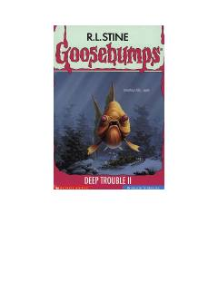

G5Billy Deep dengiz ostidagi xavfli sarguzashtlar ichida qolib ketadi.
Billy Deep va uning singlisi Sheena Karib dengizida amakisi bilan yozgi ta'tilni o'tkazish uchun qaytishadi. Biroq, dengiz ostidagi tinchlik tez orada xavfli va ulkan sakkizoyoq bilan to'qnashuv tufayli buziladi. Billy o'z hayotini saqlab qolish uchun kurashishi kerak bo'ladi.